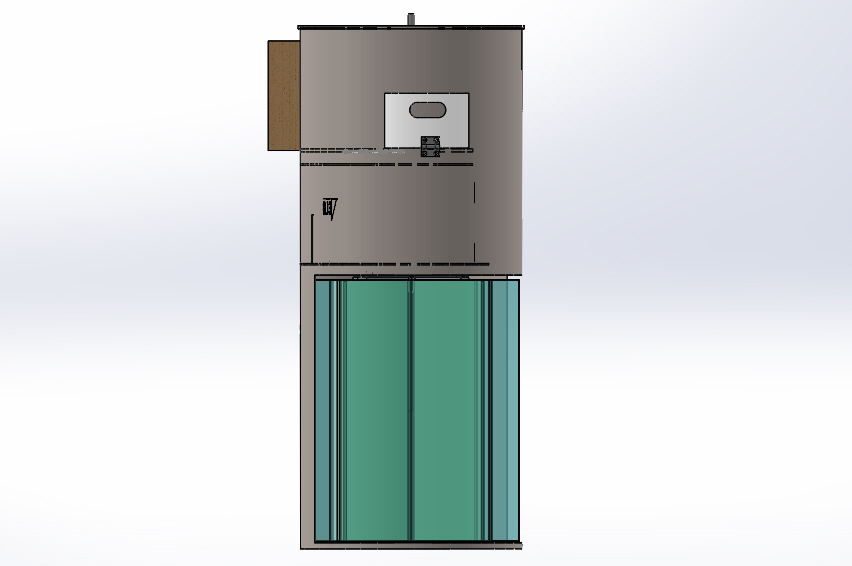
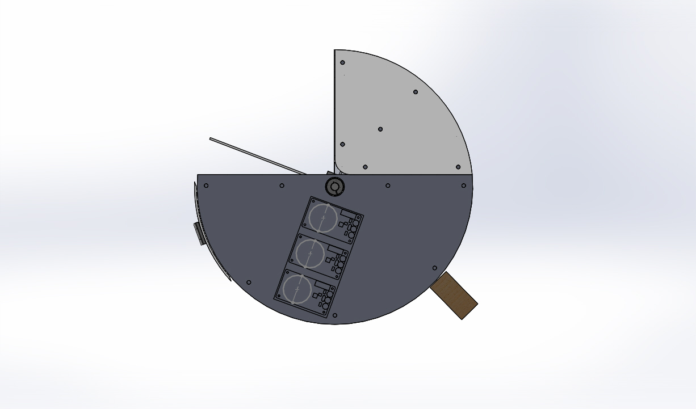
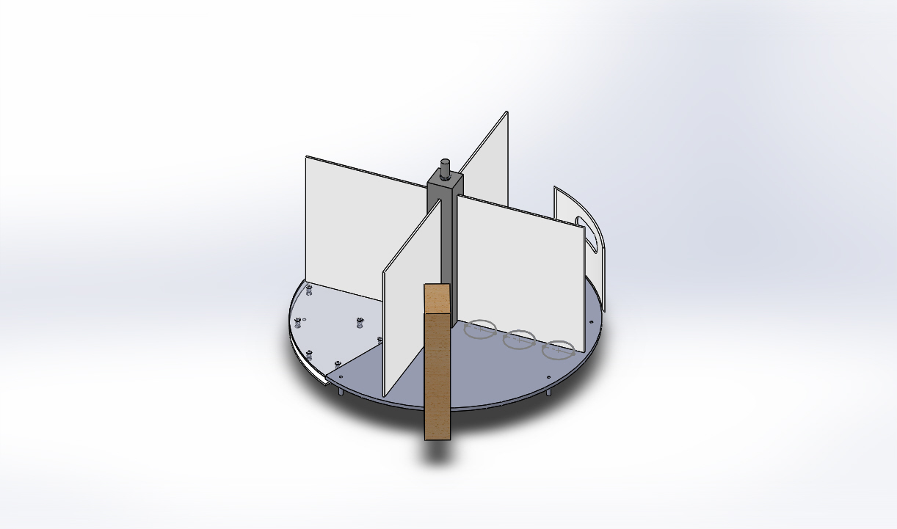
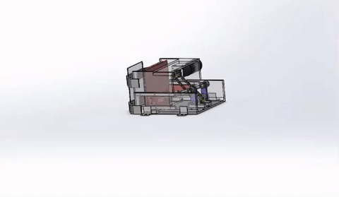
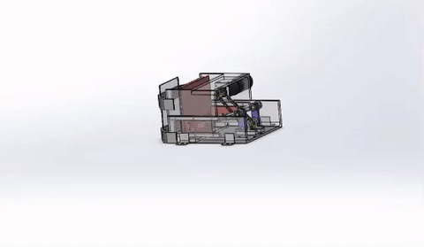
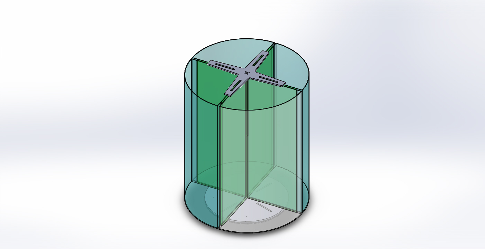
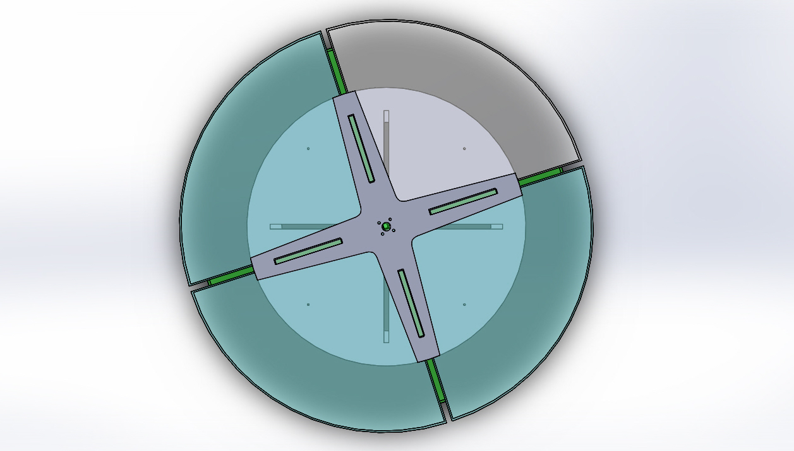

Mechatronics 2016 Team B
SYSTEM DESIGNsystem requirements
functional architecture
cyberphysical architecture
system design and depiction
home
View the Project on GitHub jaimechu/cmumechatronics2016teamb
System Requirements
Based off the design requirements listed above, our team compiled a list of four main subsections our project should incorporate, including: user interface, classification, compacting, and sorting. The integration of the four subsystems is shown in the figure below.
High Level Requirements
SYS-R1. Device shall accept at least one trash object at a time, with the object minimum size as 2”x2”x1” and maximum size as 9”x6.5”x4”. Objects are inserted by hand
SYS-R2. Trash input slot shall be at least 38” from base of device
SYS-R3. Device volume shall not exceed 80 gallons (10.7 cu. ft)
SYS-R4. Device shall contain two bins, each with at least 10 gallon (2 cu. ft) storage volume.
SYS-R5. Device shall classify trash input into four categories. metal, plastic, glass, and other. Accuracy of classification must be at least 85%.
SYS-R6. Device shall keep accurate count of classified trash items, and report the count to an untrained user.
SYS-R7. Device shall store trash input into two categories. (metal, plastic, glass) and other. Accuracy of sort/store must be at least 85%. Other category includes non-rigid plastic with no recycling number, cement, wood, ceramics, clothes, cotton, socks, wool, cardboard, newspaper, books, magazines, and styrofoam.
SYS-R8. Device shall accept trash at an average speed of 3 seconds per item for 15 items.
SYS-R9. Device shall be able to accept a new item within 120 seconds after the last item in a 15-item batch was inserted.
SYS-R10. Time to remove, empty, and reinstall bins shall take less than 15 seconds.
SYS-R11. Device shall be safe to operate for an untrained user.
Coolness Factor Options:
SYS-R12. Device shall minimize floor footprint and overall volume.
SYS-R13. Device shall compress aluminum objects, but should not compress glass and “other” objects.
Assumptions:
Functional Architecture
Based off the design requirements, our team compiled a list of four main subsections our project should incorporate, including: user interface, classification, compacting, and storing. The integration of the four subsystems is shown in the figure below.

Overall, an object enters through the entry door into our system and sweeps past three main classification sensors, including an inductance sensor, an optical sensor bank, and a mass sensor. From these three sensors, items were classified based off a decision tree. Once the object is classified and determined if compactable, the object would fall onto the trapdoor until the accurate bin has been placed under the trapdoor. Here, the trapdoor can stay closed until compacting had occured and/or the trapdoor would open to allow the object to fall into the bin. Concurrently, the LCD screen will show the total count of objects classified since the system was powered on.
Cyberphysical Architecture
The cyberphysical architecture section will include how the power system and the different subsystems will interact with one another.
The system was controlled by one microcontroller, a Texas Instruments 16-bit MSP430F5521. The hardware features of the MCU that were utilized in firmware included four 16-bit timers, a 200ksps 12 bit analog to digital converter (ADC), two universal serial communication interfaces (USCI) supporting 1 UART, 2 SPI, and 1 I2C bus, and up to 63 I/O pins. I2Cwas used to enable the motor drivers via an I/O expander, and communicate with an LCD to display classification counts. One SPI bus was used to configure and check status of motor drivers. The other SPI bus was used to communicate with the LDC1000 inductive sensor. UART was used as a debug port to manually command operations, check system status, and read sensor data.

System Design and Depiction

 We modeled our system after an actual trash can, making it cylindrical. This in turn would lower our total volume while still being able to maintain height requirements.While designing, we split up our system into three physical sections: the top, the middle, and the bottom. This section will cover our design concepts.
We modeled our system after an actual trash can, making it cylindrical. This in turn would lower our total volume while still being able to maintain height requirements.While designing, we split up our system into three physical sections: the top, the middle, and the bottom. This section will cover our design concepts.
TOP
The top, also known as the chimney, contains the sensors for classification as well as the space for the entry way.

SENSORS | The system contains up to 13 individual sensors for classifying trash and 5 for operating mechanisms. Three sensor banks (inductance, optical, and mass) are used for classifying trash.

PADDLES | There are 4 paddles to separate each item of trash into 1 of the 3 sensing areas and the hole in the last quarter of the circle to drop the trash into the next section. The paddles push the inserted trash through each sensor area.
MIDDLE
The middle contains the compactor, the space for electronics, as well as the trapdoor.
 
COMPACTOR | Compaction can be achieved using a slider-crank mechanism. This configuration was selected for it’s high force and controllable motion. Compacting requires a large force (it takes about 135 lbs to crush an aluminum can on its circular ends) The slider-crank system allows for a high linear force and can be constrained using sliders on either side.

COMPACTOR | Compaction can be achieved using a slider-crank mechanism. This configuration was selected for it’s high force and controllable motion. Compacting requires a large force (it takes about 135 lbs to crush an aluminum can on its circular ends) The slider-crank system allows for a high linear force and can be constrained using sliders on either side.
 TRAPDOOR | Items fall in through the top of the compacting chamber onto a trapdoor. These objects are constrained on the bottom and top through the geometry of the compacting chamber and stepper plate at the bottom. Objects are then compressed using a plate with teeth that travels linearly in the chamber.
TRAPDOOR | Items fall in through the top of the compacting chamber onto a trapdoor. These objects are constrained on the bottom and top through the geometry of the compacting chamber and stepper plate at the bottom. Objects are then compressed using a plate with teeth that travels linearly in the chamber.
BOTTOM
Finally, the bottom contains the bins for object storage.


BINS | The lowest section of the system contains the four bins, one each for metal, glass, plastic and paper. An important feature of this section was the ability to spin these bins to accept sorted materials from the middle section. This motion was facilitated through a motor that attached to the top of dividers affixed to a support plate mounted to a turntable. Another vital metric that pertains to this area is the ability to remove bins in under 15 seconds. A large door enables bins to be removed through the barrel during SERVICE Mode.
{kind=link}
{kind=link}
{kind=link}
{kind=link}
{kind=link}
{kind=link}